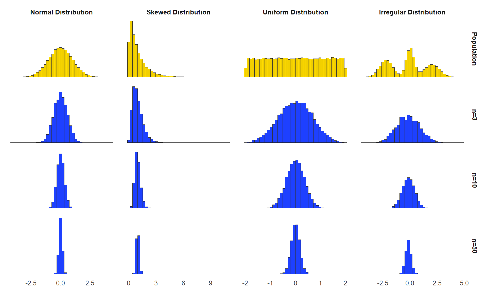

6 Chapter 6
Sampling Distributions
Learning Objectives
By the end of this chapter, you will be able to:
Identify and describe various sampling methods (e.g., random sampling, convenience sampling, purposive sampling).
Understand the concept of a sampling distribution, including its relationship to sample means, and describe how the Central Limit Theorem ensures that sampling distributions approach normality as sample size increases.
Estimate and interpret the value of the standard error of the mean.
This chapter’s main concept, sampling distributions, is challenging but fundamental to inferential statistics. Please stay engaged as we explore this complex topic.
6.1 What is a Sample?
A sample refers to a small portion of the full population being studied. Since it often is not realistic to gather information from everyone in the targeted population, collecting information from a smaller sample allows us to estimate population parameters. For example, if you wanted to know the average SAT math score of first-year students at a given institution, you could likely get that information from the institution’s website. But what if you didn’t have access to the site and decided to estimate the average by asking a handful of students what their SAT math score was? The students you talked to would represent your sample.
A few examples of sampling techniques include random sampling, convenience sampling, purposive sampling, and snowball sampling. Here we only cover methods fundamental to social science research.
Random sampling, also known as simple random sampling, is a sampling method where every individual in a population has an equal chance of being selected to participate in a study. This approach is widely used in research because it minimizes bias and helps ensure the sample is representative of the larger population being studied. This can be achieved by using random number generators or drawing names from a hat. For example, all student identification numbers from an institution are entered in a random number generator and 100 students are selected at random.
Some researchers utilize systematic random sampling. When utilizing this technique, a sample is obtained by selecting one element on a regular interval, such as every \(10^{\text{th}}\) name from a list, starting at a random point. For example, all student identification numbers from an institution are ordered on a spreadsheet and every \(50^{\text{th}}\) student is selected for the study.
Convenience sampling is another common technique used in the social sciences. When using this technique, a sample is taken from a group of people who are easy to contact. This method is often used in pilot studies and during preliminary research efforts to get a gross estimate of the results, without incurring the cost or time required to select a random sample. For example, a researcher has an office in a university building, so they sit in the lobby and speak with students who pass by to obtain a sample.
Participants are sometimes chosen based on the purpose of the study and the researcher’s judgment. This type of sampling is called purposive sampling, and it is often used when a limited number of people have expertise in the area being studied. For example, a researcher wants to focus on SAT scores for engineering students, so they survey students who are studying engineering at their university. They also decide to focus on juniors and seniors since they have spent more time at the university, and they select students with different academic standings in an attempt to create a more representative sample.
Less frequently, existing study participants recruit future participants from among their acquaintances. This is called snowball sampling because the sample group appears to grow like a rolling snowball. This method is often used in social science research when the focus is on specific characteristics that are hard to find. For example, a researcher is interested in studying the experiences of parents who homeschool children with special needs, focusing on the unique challenges and strategies they use. The researcher begins by reaching out to a few parents through online homeschooling communities or local support groups for families of children with special needs. These initial participants are asked to refer other homeschooling parents in their networks who might be willing to participate in the study.
Random sampling is arguably the most important sampling technique in educational research. You should not just ask the five students sitting near you when trying to answer a research question because there might be something about that group that makes them systematically different from the overall population. For example, maybe you want to investigate study habits among all high school students, but you teach Advanced Placement (AP) classes. This particular group of students might spend more time studying due to factors such as a more rigorous curriculum or higher academic motivation, meaning their study habits may not reflect those of the broader high school population.
The kind of sample you choose has implications for what you eventually say about your results. Your goal is to obtain a sample that is an accurate representation of the population. If your sample is not an accurate representation, your inferences will not be valid. In other words, your statistical calculations might be correct, but the inferences you make from the obtained statistics may not provide a valid description of population characteristics. For example, if your entire sample is drawn from urban private schools in the Chicago area, then you cannot claim that your results say much about the experiences of students in all schools across the United States.
Let’s imagine we draw a sample of students that is both random and representative of our population. We now have a distribution of scores for the students in our sample, and from that we can calculate the mean and standard deviation. In order to use that sample to draw inferences about our population, however, we must trust that the sample mean and standard deviation are accurate estimates of population parameters. How do we know that they are? Technically, we don’t, but we can assume they are close enough and we can quantify how far off our estimate is likely to be.
6.2 Theoretical Sampling Distributions
Everything we have talked about so far is something you will do in your own research. But to explain further, we need to step outside of real-world applications and into the theoretical statistics world.
Imagine that you had unlimited time and money. Instead of taking just one sample, imagine that you randomly selected 100 different samples from the same population to measure math SAT scores. Each time, you create a distribution of student SAT scores, and you calculate the mean of those scores. In every sample, the mean SAT score will be slightly different because of random chance. Some sample means might be unusually high or low, just because you randomly selected individuals with unusually high or low SAT scores.
Now, take each of those sample means and list each of them out. Instead of a distribution of SAT scores, you have a new distribution of sample means. This is called a sampling distribution, which is the probability distribution of a statistic (such as the mean, proportion, or standard deviation) calculated from all possible samples of a given size taken from a population. Note that you can have a sampling distribution of sample variances, or any other statistic, but for this purpose we are going to focus on the sampling distribution of sample means.
6.3 Central Limit Theorem
Quick reminder that we are not in the real world right now, and you would never actually create a sampling distribution. We are still in theoretical statistics world, trying to understand why we can trust that our sample mean is a good estimate of the population mean. The reason why is something called the central limit theorem. The central limit theorem (CLT) states that when a sufficiently large random sample is drawn from any population, regardless of the population’s distribution, the sampling distribution of the sample mean will approximate a normal distribution, provided the sample size is large enough.
Think back to the real world where we had one sample of SAT math scores. It is possible that the distribution of scores was approximately normal, but maybe it was not. Imagine you drew this sample from one of the top institutions in the United States. There will be plenty of students who earned near perfect scores. The original distribution was probably negatively skewed, with a few lower scores pulling the distribution left.
The magic of the central limit theorem is that no matter what your original distribution of SAT scores looks like, the sampling distribution will be approximately normal, especially as the size of our sample exceeds 30. We will explore how that works out in a minute, but first, think about what it means. If our sampling distribution is normal, then we know from the 68/95/99.7 rule that 95% of our sample means will be within two standard deviations of the true population mean.
The prior statement is very important, so we will say it again in a different way. Remember, we are in theoretical statistics world, and we just took 100 individual samples, and created a distribution of sample means. The center of this distribution is equal to the population mean. Due to the central limit theorem, most of the 100 sample means will be close to the true population mean – close enough to be considered a good estimate of the population mean.
The figure above shows that regardless of the shape of the original distribution (top row), the sampling distribution of sample means becomes approximately normal, especially as the sample size (\(n\)) increases.
6.3.1 Central Limit Theorem in Action
The concept can be hard to understand, so let’s use the sampling distributions applet to walk through some scenarios. The starting point is a normal distribution with mean = 16 and standard deviation (SD) = 5. We are still in theoretical statistics world where we magically know the population parameters – remember that in the real world we usually do not know those. To make it more interesting, change the starting distribution to a skewed distribution.
The concept can be hard to understand, so let’s use the sampling distributions applet to walk through some scenarios. The starting point is a normal distribution with mean = 16 and standard deviation (SD) = 5. We are still in theoretical statistics world where we magically know the population parameters – remember that in the real world we usually do not know those. To make it more interesting, change the starting distribution to a skewed distribution.
(TODO fig 6.2)
On the left we can now see a new population mean of 8.08 and standard deviation of 6.22. Our next step is to take a sample of this data. In the applet, click on the word Animated and you will see what happens when you take a random sample of 5 from the population. Click it 4 more times, and you will have three distributions: the population at the top, which in the real world we do not have, your most recent 5-person sample, and then your sampling distribution. Do you notice how the sample mean is slightly different each time you take a sample? Then, each of those sample means are added to the third distribution.
Rather than clicking Animate 100 times, let’s speed this up. Click on 10,000 to see what would happen if you pulled 10,000 samples from the original population. Do you notice how the mean of your sampling distribution is now very close to the true population mean? Your example will look a little different since each sample is random, but you should see something like this:
(TODO fig 6.3)
Even though the distribution of scores in the original population was skewed, the distribution of sample means looks a lot more like a normal distribution.
6.4 Standard Error of the Mean
Earlier in this chapter, we said we would explain why we can assume that our sample mean is close enough to the population mean, and that is what we just discussed. Because the sampling distribution is normal, we know that 95% of all possible sample means are within two standard deviations of the true population mean, and that is good enough. When we get into hypothesis testing, you will see how we manage the possibility that we randomly ended up with an oddball sample that is not a great estimate of the population, but for now, we are assuming that our sample mean is close.
How close is it, though? We can’t say for sure, because remember, in the real world we only took one sample, and we don’t actually know the population parameters. But now we get to the second promise made earlier in the chapter: we can estimate how close our sample mean is likely to be to the population mean. We do this by calculating the standard error of the mean, which you will often see referred to as simply standard error. The standard error of mean (\(s_M\) or SEM) quantifies how much a sample mean is likely to differ from the true population mean.
Before getting into the calculations, think about this conceptually. What exactly are we doing here? We have a distribution of sample means, and we want to know how far the average sample mean is likely to be from the true population mean. This should sound very similar to what we learned in chapter 3 – standard deviation. Just like we can find the standard deviation of our distribution of SAT scores, we can find the standard deviation of our sampling distribution of sample means. Look back to figure 6.3, and you can see the standard deviation of the sampling distribution is 2.79. This tells us that the average sample mean is 2.79 points away from the true population mean. Figure 6.4 illustrates this.
(TODO fig 6.4)
Do you see a slight problem? We can quantify how far our sample mean is likely to be from the true population mean, but to get the standard deviation of the sampling distribution, we first must create a sampling distribution, and that doesn’t happen in the real world. So, what do we do? We can estimate it. Here is how you calculate an estimate of standard error:
\[ s_M = \frac{s}{\sqrt{n}} \]
What that says is that the standard error of the mean (\(s_M\))
is equal to the sample standard deviation divided by the square root of the sample size (\(n\)). You should probably memorize that, but of course you should also understand why it makes sense.
If you think about what would cause your standard error to be high or low, there are two main factors. First, the variability of the original distribution. Let’s go back to our SAT math score example. If your population is all students who took the SAT across the United States, there will be quite a bit of variation in scores. A random sample could end up including some major outliers, just by chance, and when that happens your sample mean will be farther away from the true population mean. In contrast, say your population was students admitted to an elite honors college. The SAT scores from that population will likely be more tightly clustered together near the higher end of the range of possible scores. Therefore, there are fewer outliers that could be included in your random sample.
Look back at the formula above. The \(s\) in the numerator is your sample standard deviation. As variability decreases, s decreases; a smaller numerator in the fraction means a smaller standard error.
Next, let’s consider the other part of the fraction in our standard error formula: the sample size. If you take a very small sample, and you end up with one outlier, the outlier will have a greater influence on the sample mean than if it was just one of many scores. Let’s go back to the sampling distribution applet so you can see how this works. A screenshot of the sampling distribution after taking 10,000 samples of size \(n = 5\) is located in figure 6.3. Go ahead and change that to \(n = 25\) and click on the 10,000 button again. This is what it looked like in our example:
(TODO fig 6.5)
You should notice two things. First, the mean did not change very much. Even with a very small sample size, after we take 10,000 samples, we will have a very accurate estimate of the population mean. Changing the sample size to 25 did not get us much closer. But what changed? When our sample size was only 5, the sampling distribution was much wider. By random chance, there were some really oddball samples included that would have been pretty poor estimates of the population mean. The statistics showed the standard deviation of the sampling distribution (i.e., standard error of the mean) was 2.79 when n = 5. But in this second version, when n = 25, the standard error is much lower, at 1.24.
Go back to the formula and you will see how this works out. The denominator of the fraction is the square root of the sample size. As sample size increases, the denominator gets bigger, and the standard error gets smaller.
6.5 Conclusion
We spent a lot of time in the theoretical statistics world in this chapter. Let’s go back to the real world for a quick summary before moving to hypothesis testing in chapter 7.
If your sample is both random and a good representation of the population, we can safely assume that the sample mean is a useful estimate of the population mean, especially when your sample size is at least 30.
We know that your sample may be different from the population simply due to sampling error, but we can estimate the size of that error by calculating the standard error of the mean.
Standard error of the mean (\(s_M\) or sometimes referred to SEM) is related to our sample standard deviation, but it’s not the same thing. We divide our sample standard deviation (SD) by the square root of the sample size to calculate standard error. Thus, standard error, which is the standard deviation of the theoretical sampling distribution, will always be smaller than our actual sample standard deviation.
The standard error is measured in the same units as your original dependent variable. For example, if you took a sample of 100 students and found that their average SAT Math score was 600 with a standard deviation of 50, the standard error would be 5, calculated as 50 divided by the square root of 100.
Relating to standard deviation, this means that individual scores in the sample deviate from the sample mean by an average of 50 points. However, when considering the sample mean as an estimate of the population mean, the standard error tells us how much the sample mean is likely to differ from the true population mean.
According to the 68/95/99.7 rule, we can be 95% confident that the true population mean lies within two standard errors of our sample mean. In this example, that means we are 95% confident that the true population mean SAT Math score is within 10 points (2 × 5) of 600 (590 to 610).
### Key Takeaways for Educational Researchers from Chapter 6
Representativeness and random sampling matter. To ensure that your sample mean is a valid estimate of the population mean, your sample should be both random and representative of the population. This is particularly important in educational research, where studying diverse groups (e.g., students from different schools, districts, or demographics) helps ensure meaningful and generalizable results.
The standard error of mean (\(s_M\) or SEM) quantifies how much a sample mean is likely to differ from the true population mean. For instance, when comparing average test scores or teacher evaluations across schools, SEM helps determine the reliability of your estimates. Calculating SEM allows researchers to account for variability and acknowledge potential sampling error in their conclusions.
Larger sample sizes reduce standard error, leading to more precise estimates of population parameters. Education researchers should prioritize collecting sufficient and representative participants for research, especially when dealing with diverse populations, to minimize the influence of outliers and improve the reliability of their findings (e.g., assessing standardized test performance across districts).
When the central limit theorem is applicable with a sufficiently large sample size (i.e., n > 30), the 68/95/99.7 rule can be applied to the sampling distribution of means. This rule states that approximately 95% of sample means will fall within two standard errors of the true population mean. Education researchers can use this principle to evaluate how closely their sample mean approximates the population mean, gaining insights into the reliability of their sample statistic for making inferences about the population mean.
6.6 Key Definitions from Chapter 6
The central limit theorem (CLT) states that when a sufficiently large random sample is drawn from any population (regardless of the population’s distribution), the sampling distribution of the sample mean will approximate a normal distribution, provided the sample size is large enough.
Convenience sampling utilizes a sample taken from a group of people who are easy to contact.
Purposive sampling utilizes a sample chosen based on the purpose of the study and the researcher’s judgment.
Random sampling is a sampling technique where every member of the population has an equal chance of being selected.
Sample refers to a small portion of the full population being studied.
A sampling distribution is the probability distribution of a statistic (such as the mean, proportion, or standard deviation) calculated from all possible samples of a given size taken from a population.
Snowball sampling utilizes a technique where existing study subjects recruit future subjects from among their acquaintances.
The standard error of mean (\(s_M\) or SEM) quantifies how much a sample mean is likely to differ from the true population mean.
6.7 Check Your Understanding
What is a sampling distribution?
A distribution of a population’s characteristics
A distribution of a statistic (like a mean or proportion) calculated from all possible samples of a specific size
A list of all individual data points in a population
A random collection of data from a single sample
According to the central limit theorem, what happens to the sampling distribution of the sample mean as the sample size increases?
It becomes more skewed
It approximates a normal distribution, regardless of the population distribution
It moves closer to the smallest value in the sample
It diverges from the population mean
Which sampling technique ensures that every member of the population has an equal chance of being selected?
Convenience sampling
Purposive sampling
Random sampling
Snowball sampling
What is the standard error of the mean (SEM), and how is it calculated?
It is the variability of individual data points and is equal to the population standard deviation.
It is the standard deviation of the sampling distribution of sample means, calculated by dividing the sample standard deviation by the square root of the sample size.
It measures the deviation of a single data point from the sample mean, using the formula SD/n.
It is a fixed value representing the population variance.
What happens to the sampling distribution of the sample mean if the population distribution is normal?
The sampling distribution will always be skewed, regardless of sample size.
The sampling distribution will only be normal if the sample size is large.
The sampling distribution will match the population distribution for any sample size.
The sampling distribution will be normal, regardless of sample size.